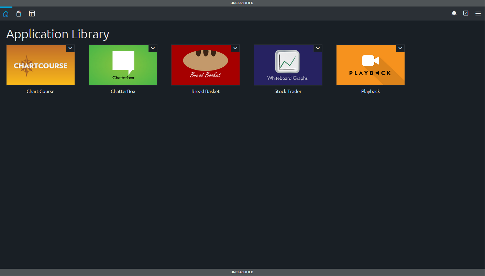
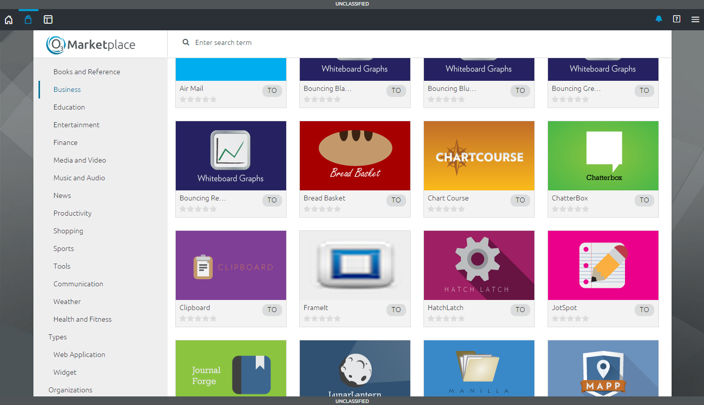
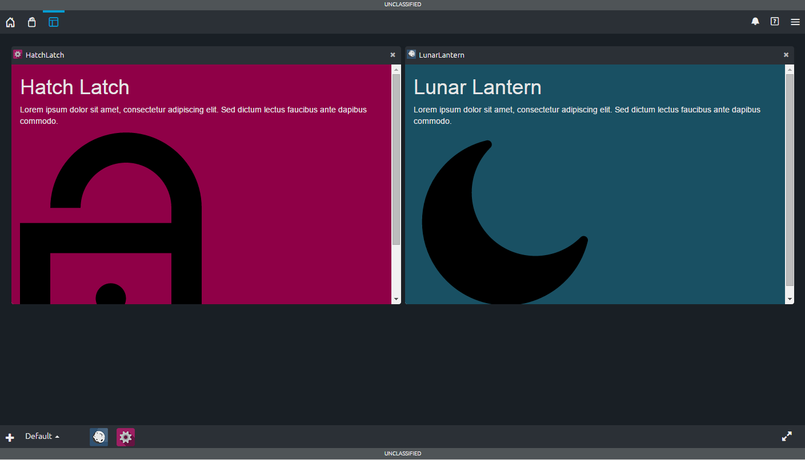
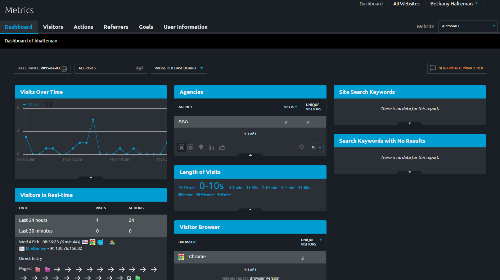

HUD
OZP HUD (Heads Up Display) is a convenient landing page for OZP users showing their favorite OZP applications. Users can launch their apps in a webtop or in separate browser tabs.
Center
OZP Center is a marketplace that enables the search and discovery of OZP-enabled widgets and applications.
Webtop
OZP Webtop allows users to create dashboards with multiple OZP widgets/applications running in a single window. Both grid and desktop layouts are provided.
Metrics
OZP Metrics is a web interface to display metrics collected through the use of the OZP Center by an end user with valid certificates.